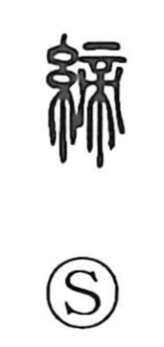

締

Uncategorized
Kun: shimeru, shimaru | On: tei
to tighten ・ to tie ・ to conclude
Explanation
Shirakawa explains 締 as a phono-semantic character: 糸 provides the sense of cord or thread, while 帝 (tei) serves as the sound element and depicts a large offering table or altar whose crossed legs are secured beneath. The character evokes the act of lashing and tightening those crossed legs, which gives the meanings to tighten and fasten, and by extension to bind and to conclude agreements.